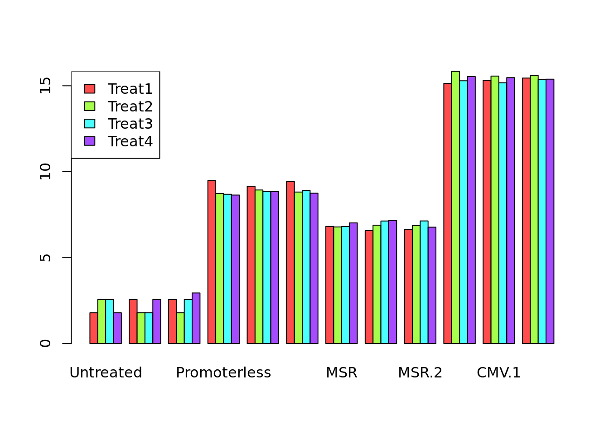
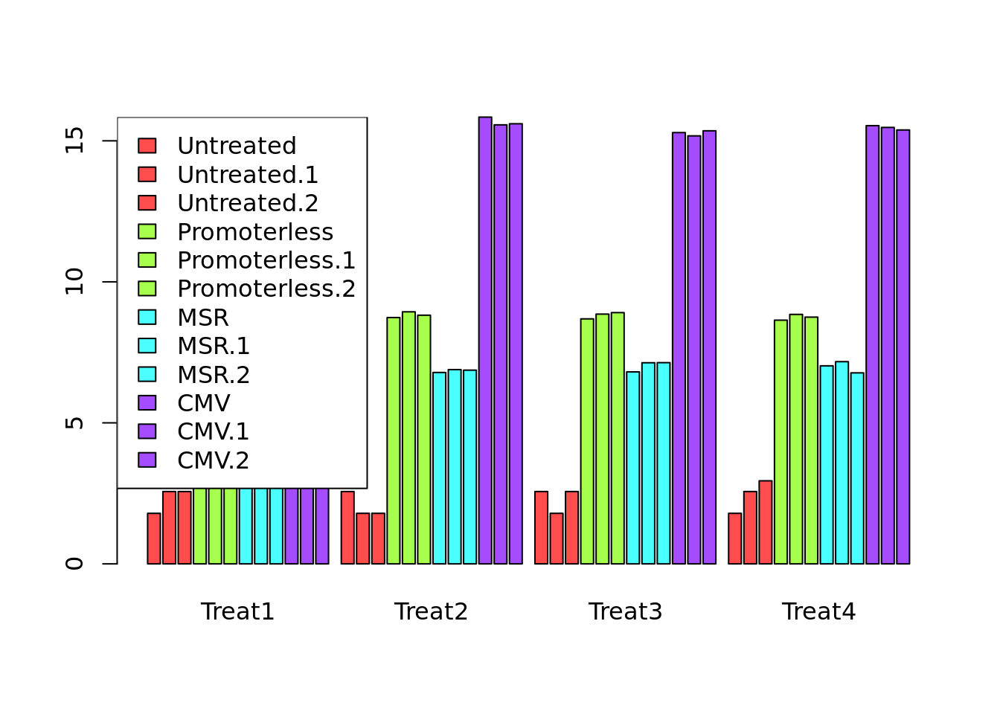
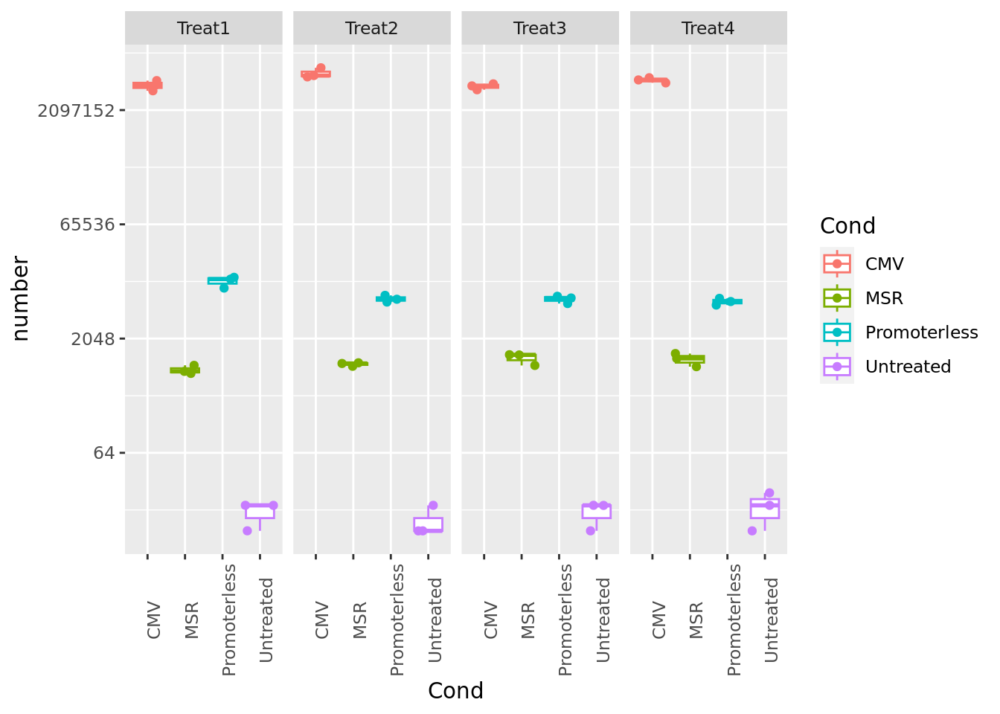
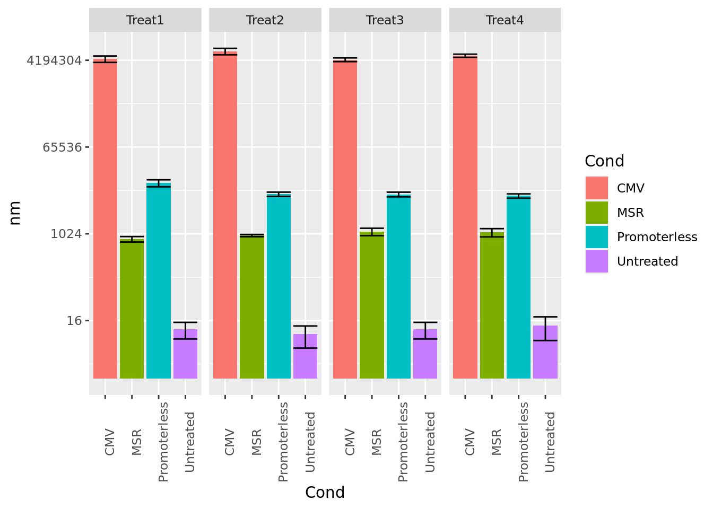

# notice: use first column as row.names
D=read.delim2("../data/luciferase.tsv", row.names=1)
D## Untreated Untreated.1 Untreated.2 Promoterless Promoterless.1
## Treat1 6 13 13 13148 9466
## Treat2 13 6 6 6211 7599
## Treat3 13 6 13 5924 7013
## Treat4 6 13 19 5657 6943
## Promoterless.2 MSR MSR.1 MSR.2 CMV CMV.1 CMV.2
## Treat1 12447 911 713 758 3762523 4492576 5127251
## Treat2 6746 885 981 962 7575019 5751696 5983761
## Treat3 7389 905 1249 1255 4376037 3891917 4659056
## Treat4 6300 1121 1299 873 5590127 5249096 4798330Barplot (from base R) will need matrix. So need to convert data.frame –> matrix. At the same time log-transform might be useful –> avoid gaps
M=as.matrix(log(D))These are first attempts to generate boxplots with base R. They will not be very meaningful, but they can highlight some problems
palette(rainbow(4,alpha=0.7)) # set some palette for color mapping
barplot(M, beside = TRUE, col=1:4)
legend("topleft", legend = rownames(M), fill = 1:4)
# Taking the transpose (t(M) below) may be somwhat closer to the desired output
cols=rep(1:4, each=3) # define colours
sp=c(0.2, 1) # control the gap between the bars
barplot(t(M), beside = TRUE, col=cols, space = sp)
legend("topleft", legend = colnames(M), fill = cols)
# Notice that the colour assignment assumes a specific order an implicit understanding of the dataUnfortunately the data is not “tidy” :-(
The tidyverse way. Very powerful, but it forces the adoption of some grammar rules
library(tidyverse) # this package (and dependencies) will have to be installed before## -- Attaching packages --------------------------------------- tidyverse 1.3.1 --## v tibble 3.2.0 v stringr 1.5.0
## v purrr 1.0.1 v forcats 1.0.0## -- Conflicts ------------------------------------------ tidyverse_conflicts() --
## x dplyr::filter() masks stats::filter()
## x dplyr::lag() masks stats::lag()# now keep the Treatment as column (c.f. the first efforts)
D=read.delim2("../data/luciferase.tsv") Observation: We have two categorical variables (Treatment, Condition), 1 measurement (number)
Goal: Gather all columns and
We will do this in a pipeline (%>%)
D %>% gather(Cond, number, -Treatment) %>% head # just print the head for now (might be a big data set)## Treatment Cond number
## 1 Treat1 Untreated 6
## 2 Treat2 Untreated 13
## 3 Treat3 Untreated 13
## 4 Treat4 Untreated 6
## 5 Treat1 Untreated.1 13
## 6 Treat2 Untreated.1 6Now expand the above pipe to deal with the Condition variable: unify Cond. Remove the suffix from string (mutate variable)
# thankfully this is easy (just remove suffix .1 and .2) --> mutate and use regexp
D = D %>% gather(Cond, number, -Treatment) %>% mutate(Cond=str_remove(Cond,".\\d"))This is the prefered way, as you will show the distribution in a more meaningful way.
ggplot(D, aes(x=Cond, y=number, colour=Cond)) +
geom_boxplot() + # a boxplot summary
geom_jitter() + # add actual data points
scale_y_continuous(trans = 'log2') + # on a logarithmic scale
facet_grid(~Treatment) + # "facet" over treatments
theme(axis.text.x = element_text(angle = 90)) # use theme to change axis labels/angles
If you really have to use a barplot. Barplots are frequently used, but discouraged
https://www.data-to-viz.com/caveat/error_bar.html
# First define some mean number (mn) and standard deviation (nd) for each combination (Treatment, Cond)
Db = D %>% group_by(Treatment, Cond) %>% summarize(nm=mean(number), nd=sd(number))## `summarise()` has grouped output by 'Treatment'. You can override using the
## `.groups` argument.ggplot(Db, aes(x=Cond, y=nm, fill=Cond)) +
geom_bar(stat="identity") + # plots barplot
geom_errorbar(aes(ymin=nm-nd, ymax=nm+nd)) + # adds errorbar
scale_y_continuous(trans = 'log2') + # log. scale
facet_grid(~Treatment) +
theme(axis.text.x = element_text(angle = 90)) # use theme() to change axis labels/angles
Bioinfo Core @ MPI-IE Freiburg (2023)